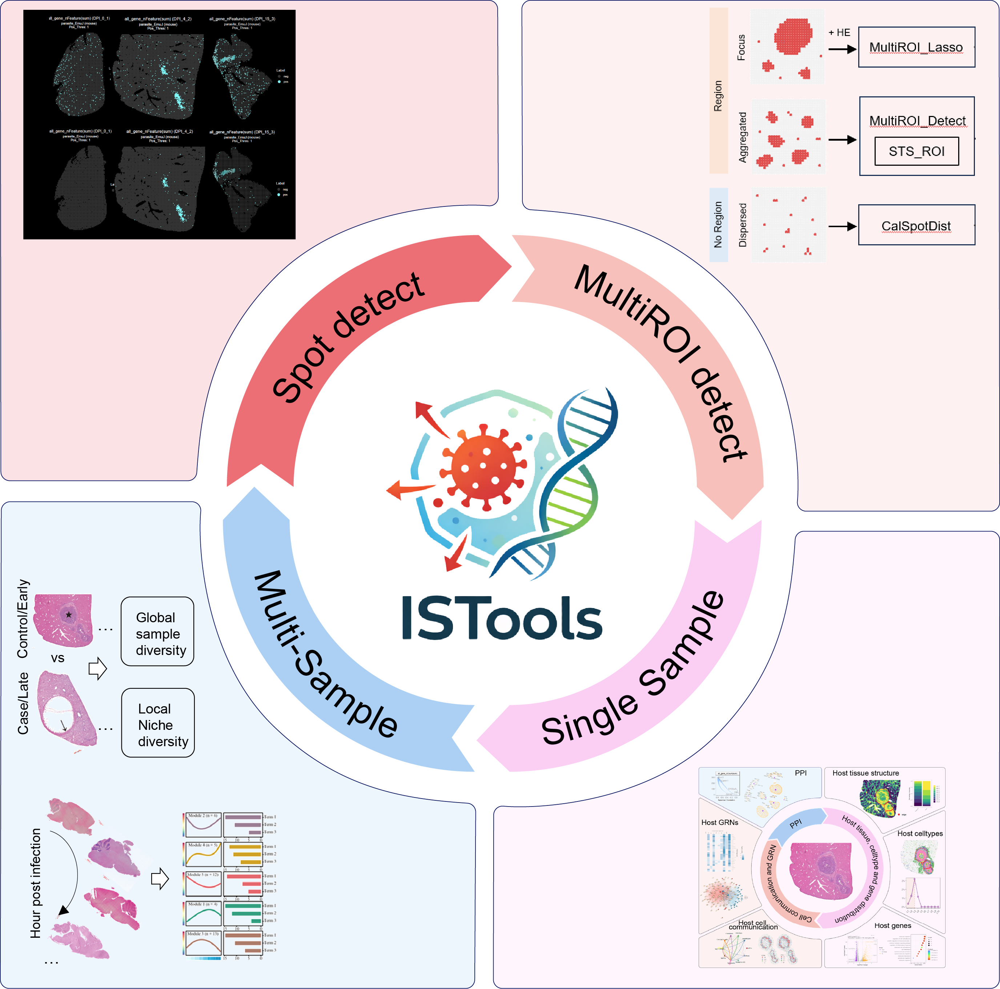

Overview
ISTools is an R-based toolkit designed to provide a unified and efficient framework for spatial transcriptomics analysis in infectious diseases, built upon the Seurat object. While spatial transcriptomics is increasingly applied to explore disease mechanisms, including infection, a standardized analytical framework and user-friendly tools tailored for infectious disease research remain lacking. ISTools addresses this gap by defining a comprehensive analytical pipeline specifically for infection-related spatial transcriptomics data. The toolkit encompasses four main applications: accurate detection of infection sites, characterization of the infection microenvironment, single-sample Niche analysis, and cross-sample comparative or temporal analysis. By integrating these functions into a cohesive framework, ISTools enhances researchers’ ability to interpret and mine infection-related spatial transcriptomics data with both rigor and ease.

Graphic abstract
Key Features:
- Unified Analytical Framework: Provides a standardized pipeline tailored for infection spatial transcriptomics data storage, management, and processing.
- Accurate Infection Site Detection: Enables precise localization of pathogen-infected regions.
- Microenvironment Characterization: Facilitates identification and analysis of the infection microenvironment.
- Niche and Comparative Analysis: Supports single-sample Niche analysis as well as multi-sample comparison or time-series analysis.
Installation
Configure mirrors
To ensure stable and fast installation, users may configure CRAN and Bioconductor mirrors depending on their location.
# Recommended for users in China
options("repos" = c(CRAN="https://mirrors.tuna.tsinghua.edu.cn/CRAN/"))
options(BioC_mirror="https://mirrors.tuna.tsinghua.edu.cn/bioconductor")
# Recommended for users outside China
options("repos" = c(CRAN="https://cloud.r-project.org"))
options(BioC_mirror = "https://bioconductor.org")Prepare library path
Given the number of dependencies, it is strongly recommended to use an isolated library path.
This prevents conflicts with existing R environments and improves reproducibility.
Pre-installation requirements
Before installing ISTools, we recommend manually installing a small set of core system-dependent packages that are frequently associated with installation failures.
Installing them in advance can significantly reduce the likelihood of installation errors.
# Core system-related dependencies
install.packages("openssl") # may fail due to network or SSL configuration; retry if necessary
install.packages("curl") # required for data transfer and remote access
# Core R infrastructure
install.packages("rlang") # >= 1.1.7, required by tidyverse ecosystem
install.packages("Matrix", type = "binary") # >= 1.6.5, required for sparse matrix operationsInstall ISTools
if (!requireNamespace("remotes", quietly = TRUE)) {
install.packages("remotes")
}
remotes::install_github("YulongQin/ISTools")Installation from source is recommended and may take approximately 20–30 minutes depending on system configuration.
If the installation fails, please refer to the installation tutorial for manual dependency setup
Quick Start
You can click here to access the quick start tutorial, which provides a concise overview of the main functions and workflow of ISTools.
For a more detailed step-by-step guide, please refer to the following tutorials:
Resources
Project
- GitHub Repository: Access the source code and contribute to ISTools on GitHub.
Tutorials
- Online Tutorial: For a comprehensive guide on using ISTools, visit our tutorial website.
Raw data
- Gene_Geneset: A dataset containing gene and gene set information, available in the R package.
- Raw data: You can access the Raw data used in the tutorial from the Figshare repository. Some data are unavailable or partially available due to constraints set by the original authors. Please contact the original authors for data access requests.
Citation
If you use ISTools in your research, please cite:
Qin Y (2026). ISTools: Infectious Spatiotemporal Transcriptomics Tools. https://github.com/YulongQin/ISTools.git, https://yulongqin.github.io/ISTools/, https://github.com/YulongQin/ISTools.